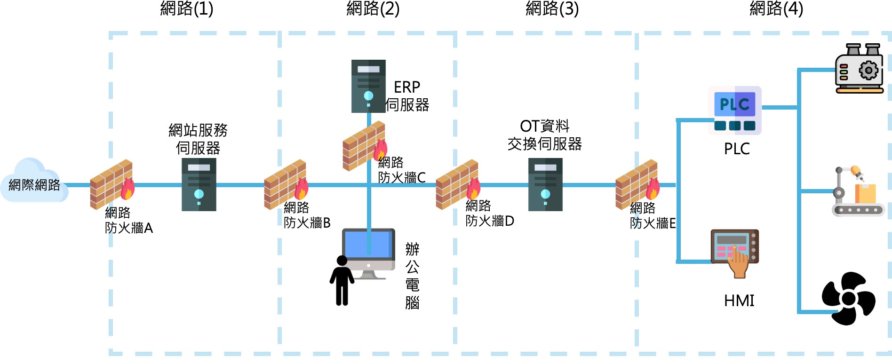

本題考查臺灣證券交易所（Taiwan Stock Exchange，TWSE）對上市公司資安重大訊息發布的規定。
判斷「重大」的核心標準：資安事件是否造成公司系統、資料、服務、商譽或財務的實質損害，並足以影響投資人的投資決策。
選項分析：
✅ 選項C為正確答案（不需發布）：雲端備份供應商故障，但主線業務系統運作正常，備份資料未遺失亦未外洩。此情況對公司業務無實質影響，屬供應商自身問題，且未造成資料安全風險，故不需發布重大訊息。
❌ 選項A需要發布：官方網站首頁遭置換（Website Defacement），屬於網站遭入侵的公開事件，直接影響公司形象與客戶信任，屬於需揭露的重大資安事件。
❌ 選項B需要發布：企業資源規劃（Enterprise Resource Planning，ERP）系統遭勒索軟體（Ransomware）加密，導致核心業務系統停擺，已造成營運中斷，屬重大影響。
❌ 選項D需要發布：原始碼與技術文件已外洩至暗網（Dark Web），屬機密資料外洩，嚴重損害智慧財產與競爭優勢，必須發布重大訊息。
重點記憶：「系統正常運作且無資料損失」的事件通常不構成重大訊息發布門檻。
本題整合考查個人資料保護法（個資法）與ISMS的法律責任知識。
選項B為正確答案：依據個資法第12條及相關規定，當事人之個人資料被竊取、洩漏、竄改或其他侵害時，非公務機關應查明後以適當方式通知當事人。針對政府機關或特定行業，資通安全管理法另要求在法定時限內通報主管機關，逾期將加重處罰。
選項A錯誤：ISO 27001認證是資安管理能力的證明，不具有免除法律責任的效果。即便通過認證，若發生個資外洩仍須依個資法承擔行政罰鍰（最高新台幣1,500萬元）與民事賠償責任（每人每次500～20,000元）。
選項C錯誤：個資外洩同時涉及個資法與資通安全法規。依《資通安全事件通報及應變辦法》，個人資料遭未授權存取或洩漏屬於資通安全事件，需依事件等級進行通報。
選項D錯誤：法律並未強制規定所有個資都必須加密。個資法要求採取「適當之安全措施」，加密是常見措施之一，但未加密不必然等同於未盡善良管理人注意義務，需視整體安全措施而定。
本題考查後量子密碼學（PQC）轉型策略與加密敏捷性（Crypto-Agility）的最佳實務。
核心威脅：「先竊取，後解密」（Harvest Now, Decrypt Later，HNDL）
攻擊者現在收集加密資料，等量子電腦成熟後再解密。對需保存10年以上的機密資料，這是迫切威脅。
選項C正確 — 混合模式（Hybrid Scheme）：
NIST於2024年正式發布PQC標準，包含ML-KEM（Module Lattice Key Encapsulation Mechanism，即原Kyber）。混合模式同時使用傳統演算法（如RSA/ECC）與PQC演算法進行雙重封裝：即使量子電腦破解了傳統演算法，PQC層仍提供保護；若PQC演算法有未知弱點，傳統演算法仍可防護。這正是加密敏捷性的核心—能快速切換或疊加演算法。
選項A錯誤：RSA-4096與ECC-521屬傳統公鑰加密，均會被足夠強大的量子電腦（透過Shor演算法）破解，金鑰長度無法解決量子威脅的根本問題。
選項B錯誤：NIST PQC標準已於2024年正式發布，暫停更新反而增加曝險時間，錯失轉型視窗。
選項D錯誤：AES-128對稱加密雖對量子電腦有較好抵抗性（僅安全性減半），但缺乏公鑰基礎設施無法安全交換金鑰，實務上不可行。
本題考查臺灣證券交易所（TWSE）對上市公司重大資安事件的揭露規定。
判斷原則：事件是否對公司業務、系統可用性、資料安全或商譽造成「重大」影響，足以影響投資人判斷。
選項A正確（需發布）：DDoS攻擊導致官方網站無法正常運作，影響客戶存取服務，且屬主動性攻擊事件，即使攻擊是短暫的，也屬需揭露的重大資安事件。
選項B不正確（不需發布）：因發現漏洞進行「主動維護升級」屬於預防性停機（Planned Maintenance），並非遭受攻擊或系統被動失效，不屬於重大資安事件。主動修補漏洞是良好的資安實踐，不在強制揭露範疇。
選項C正確（需發布）：網路遭入侵並導致資料外洩，直接涉及公司機密與可能的個資外洩，是典型需發布的重大資安事件，可能涉及商業機密損失與法律責任。
選項D正確（需發布）：勒索軟體加密機密檔案，不僅涉及系統安全，更威脅業務持續運作（Business Continuity）與財務損失（贖金），屬重大資安事件。
記憶訣竅：主動維護＝不需揭露；被動受害（攻擊、入侵、外洩）＝需揭露。
本題考查ISO 27001 資訊安全管理系統（Information Security Management System，ISMS）驗證範圍的界定原則。
驗證範圍界定原則：應涵蓋組織核心業務活動、資訊資產集中處，以及對客戶承諾服務相關的所有流程。範圍應與外部利害關係人的期望對應。
選項A正確（資訊機房管理）：原始碼及重要資料均存放於A公司自建資訊機房，機房是核心資訊資產的實體安全保障，必須納入驗證範圍。
選項B不正確（人力資源管理系統）：人力資源管理系統雖是A公司內部系統，但與提供給金融業客戶的「資訊交換系統」服務無直接關聯，非核心業務流程，可以排除在初期驗證範圍外（除非含有敏感人事資料）。
選項C正確（系統開發、維護活動）：A公司的核心業務就是開發與維護金融業「資訊交換系統」，開發與維護活動直接影響交付給客戶系統的安全性與品質，必須納入範圍。
選項D正確（核心資通系統管理）：核心資通系統是A公司業務運作的骨幹，涉及客戶資料處理與服務交付，金融業客戶關注「安全、穩定之系統」，故必須涵蓋。
重點：ISMS範圍應聚焦於核心業務、主要資訊資產與對外服務承諾的相關活動。
本題考查ISO/IEC 27001:2022 附件A控制措施的適用性聲明（SoA）判斷。
選項D有誤（8.30 委外開發→宣稱不適用，但實際應適用）：
根據題組情境，A公司與B公司「長期合作共同開發」資訊交換系統的部分功能。這明確構成委外開發（Outsourced Development）的情形。ISO 27001:2022 控制措施8.30「委外開發」規定：組織委託外部廠商進行開發時，應對其開發活動進行監督與安全要求。因此，8.30應標記為「適用」，而非「不適用」，選項D聲明錯誤。
其他選項正確分析：
選項A正確：A公司無雲端服務（5.23不適用），但有B公司供應商關係（5.19、5.20、5.22適用），且有開發專案（5.8適用）。
選項B正確：5.24資安事故管理規劃，A公司有對金融業客戶「即時通報」的承諾，故適用。
選項C正確：與B公司合作需要保密協議（6.6）；原始碼保存於A公司（8.4）；有開發活動（8.25、8.28）均適用。
關鍵記憶：只要有與外部廠商合作開發的情形，8.30「委外開發」就應標記為適用。
本題考查《資通安全管理法》中有關委外開發系統安全性檢測的規定。
法規核心原則：利益迴避（Conflict of Interest Avoidance）
依據《資通安全管理法》及其子法（資通安全責任等級分級辦法等）規定，當機關委外開發資通系統時，系統的安全性檢測不得由開發廠商（A公司）自行執行，以避免「球員兼裁判」的利益衝突。
選項A有誤：A公司既是開發商，又進行自我安全性檢測，明顯違反利益迴避原則。法規不允許開發者對自己開發的系統出具安全性自我證明作為政府機關採購的依據。
選項B正確：B公司雖參與部分開發，但其與A公司為獨立法人，且B公司並未是主要委外對象。若B公司進行安全性檢測，雖有一定爭議，但較A公司自行檢測合規。
選項C正確：金融機構客戶作為採購方，自行進行安全性檢測是最符合法規精神的做法，委託方自行驗收，沒有利益衝突。
選項D正確：委託獨立的第三方機構進行安全性檢測，是最客觀的方式，完全符合資通安全管理法的要求。
記憶口訣：開發商不得自驗自證，需由甲方或第三方獨立驗證。
本題考查《資通安全管理法施行細則》中適任性查核（Suitability Check）的具體標準。
選項B錯誤（正確答案）：正確的法規規定是「曾任公務員，因違反相關安全保密規定受懲戒或記過以上行政懲處」才列為查核不通過事項。選項B誤將標準降低為「警告以上」。
兩者差異說明：
| 懲處等級 | 嚴重程度 | 適任性查核 |
|---|---|---|
| 警告 | 最輕微 | ❌ 不在查核範圍 |
| 記過 | 中等 | ✅ 列為查核不通過 |
| 懲戒 | 較重 | ✅ 列為查核不通過 |
選項A正確：「記過以上」才是法規規定的查核標準，符合規定。
選項C正確：曾犯洩密罪或內亂、外患罪「經判刑確定」，屬已確定之犯罪紀錄，列為查核不通過。
選項D正確：「通緝有案尚未結案」雖未判決，但已構成重大安全疑慮，同樣列為查核不通過。
關鍵記憶：適任性查核的行政懲處門檻是「記過以上」，不含「警告」。
本題考查生物特徵認證（Biometric Authentication）的基本概念，特別是錯誤率指標的正確定義。
選項C不正確（正確答案）：生物特徵認證有兩種錯誤率，必須正確區分：
| 名稱 | 英文 | 縮寫 | 定義 | 又稱 |
|---|---|---|---|---|
| 錯誤拒絕率 | False Rejection Rate | FRR | 合法使用者被錯誤拒絕 | 型I (Type I) 錯誤 |
| 錯誤接受率 | False Acceptance Rate | FAR | 非法使用者被錯誤接受 | 型II (Type II) 錯誤 |
錯誤拒絕率（FRR）應稱為型I錯誤，不是型II錯誤。型II錯誤是FAR（錯誤接受率），讓非法者通過才是更大的安全問題。
選項A正確：在受控環境下，指紋辨識的準確度通常高於人臉辨識，因指紋特徵點更獨特且不受光線、角度影響。
選項B正確：視網膜辨識（Retinal Scan）需要使用者靠近設備且保持靜止，擷取過程不便，故普及率低，但準確度極高。
選項D正確：體重與身材變化確實可能影響臉形辨識（Facial Recognition）的準確度，需要定期更新特徵模型。
記憶訣竅：FRR=型I=拒絕合法者；FAR=型II=接受非法者。
本題考查資安防禦架構的核心原則辨識。
選項B正確—縱深防禦（Defense in Depth）：
題目描述的五項措施涵蓋網路層（防火牆）、身份認證層（MFA）、授權控制層（RBAC）、資料保護層（備份加密）、人員教育層，是典型的多層次安全防禦架構。縱深防禦的核心理念：沒有任何單一控制措施是完美的，透過多層防護，即使某一層被突破，其他層仍可提供保護。
選項A不正確—最小權限原則：最小權限是指「給予使用者或系統完成工作所需的最小權限」，主要關注授權範圍，而非多層次防禦架構。題目雖有第3點角色權限控制，但整體情境顯然強調多層次。
選項C不正確—單一防禦原則：單一防禦是反面教材，即只依賴一種防禦手段，與題目的多層次做法相反。
選項D不正確—零信任架構：ZTA的核心是「永不信任，持續驗證」，強調每次存取都需驗證，不因在內網就默認信任。雖第2點（MFA）有零信任元素，但題目的整體架構仍是傳統縱深防禦。
記憶訣竅：看到「多層」「多種」控制措施並存，答案多為「縱深防禦」。
本題考查在最小權限原則（Principle of Least Privilege，PoLP）框架下，如何靈活處理臨時業務需求。
選項C正確—建立臨時角色並設定存取期限：這是最符合最小權限原則的做法。臨時角色（Temporary Role）設計只包含該專案所需的特定資源存取權限，並設定明確的有效期限，專案結束後自動失效。這兼顧了業務靈活性（可跨部門存取）與安全性（最小化、有時效性），是現代身份與存取管理（Identity and Access Management，IAM）的最佳實踐。
選項A錯誤—直接給予跨部門永久權限：這違反最小權限原則，永久性的擴大權限在專案結束後仍持續存在，造成權限蔓延（Permission Creep）的安全風險。
選項B錯誤—共用主管帳號：共用帳號嚴重違反資安基本原則。無法追蹤誰執行了哪些操作（不可否認性喪失），且主管帳號通常擁有遠超過專案所需的權限，大幅擴大了攻擊面。
選項D錯誤—允許自行設定存取：使用者自行設定存取完全失去集中管控，容易造成越權存取且難以審計，嚴重違反存取控制原則。
最小權限原則三要素：必要（只給需要的）、最小（最小量）、暫時（設有期限）。
本題考查供應鏈攻擊後的縱深防禦強化策略。供應鏈攻擊已進入內網，需防止橫向移動（Lateral Movement）與長期潛伏。
選項A正確—微切分：將內網劃分為細粒度的隔離區段，阻止攻擊者在攻破一個節點後橫向移動到其他系統。即使供應鏈更新伺服器被入侵，也無法輕易存取其他業務系統。
選項B正確—移除本機管理員+LAPS：攻擊者常利用本機管理員帳號進行橫向移動（Pass-the-Hash攻擊）。LAPS為每台電腦設定不同的隨機本機管理員密碼，即使一台電腦被入侵，其本機帳號無法用於其他電腦。
選項C錯誤—允許所有出站流量：這是嚴重的安全漏洞。允許All Outbound讓攻擊者的C2（Command and Control）通訊暢行無阻，使惡意程式能自由回傳資料、接收指令，完全違背縱深防禦原則。
選項D正確—EDR/XDR：PowerShell、WMI（Windows Management Instrumentation）是攻擊者常用的「無檔案攻擊」工具。EDR/XDR可偵測這些工具的異常使用行為（如異常時間、異常參數），及時發現潛伏的攻擊者。
本題考查職務區隔（SOD）原則的正確實施方式。
選項B正確—申請與審核分離：SOD的核心是將一個敏感交易的不同步驟分配給不同角色。客服人員「發起申請」與主管「審核生效」形成制衡：
• 客服人員：只能申請，不能單獨完成
• 主管：審核並授權，有稽核紀錄
這符合「雙人控制」（Dual Control）與「四眼原則」（Four-Eyes Principle）的精神。
選項A錯誤：完全撤銷客服人員存取權限無法滿足業務需求，且全部改由客戶自助操作，失去客服介入協助的能力，屬於過度限制。
選項C錯誤：簽署切結書是行政管控，屬於威嚇而非預防。每月抽查Log僅是事後偵測，無法阻止即時的濫用。這是補償性控制，而非預防性控制，單獨使用不足夠。
選項D錯誤：使用部門共用帳號嚴重違反個人責任歸屬（Accountability），無法區分是誰進行操作，且共用主管帳號的密碼管理困難，增加安全風險。
SOD口訣：申請者不能審核，審核者不能申請，兩者分離方可制衡。
本題考查ZTNA（Zero Trust Network Access）與傳統VPN的核心差異。
傳統VPN vs ZTNA比較：
| 特性 | 傳統 VPN | ZTNA |
|---|---|---|
| 連線驗證 | 帳號密碼/憑證 | 身分+裝置健康+情境 |
| 存取範圍 | 連上即存取全網段 | 僅限授權應用程式 |
| 信任模型 | 連線後預設信任 | 永不信任，持續驗證 |
| 通道類型 | 網路層通道 | 應用程式層通道 |
選項C正確：ZTNA的授權決策基於三個維度：（1）身分（Who）：使用者身份驗證；（2）裝置健康度（Device Health）：裝置合規狀態（是否有安全更新、防毒等）；（3）上下文情境（Context）：時間、位置、行為模式。且只建立到特定應用程式的微型通道，不像VPN給整個網段存取。
選項A錯誤：僅驗證帳密是傳統VPN的做法，且連線後可能存取全網，不符合零信任。
選項B錯誤：IP白名單屬靜態控制，雲端與混合辦公環境下IP經常變動，固定IP白名單既不彈性又不安全。
選項D錯誤：防火牆網段隔離是傳統網路安全做法，不是ZTNA的授權邏輯。
本題考查ABAC（Attribute-Based Access Control）的四大屬性類別。
ABAC四大屬性分類：
| 屬性類型 | 英文 | 範例 |
|---|---|---|
| 使用者屬性 | Subject/User Attribute | 職稱、部門、安全許可等級、教育訓練紀錄 |
| 資源屬性 | Resource/Object Attribute | 機密等級（Confidential）、資料類型、擁有者 |
| 環境屬性 | Environment Attribute | 時間（Office Hour）、地理位置（Taipei IP）、網路類型 |
| 操作屬性 | Action Attribute | 讀取、寫入、刪除、列印 |
選項B正確—環境屬性：時間（Office Hour）和來源地理位置（Taipei IP）屬於存取發生時的外部情境資訊，即「環境屬性」。這些屬性會隨時間和地點動態變化，ABAC可據此實現動態授權（如下班時間禁止存取機密資料）。
選項A錯誤：職稱與部門代號是使用者（主體）屬性（Subject Attribute），描述誰在存取，不是環境資訊。
選項C錯誤：機密等級標籤（Confidential）是資源屬性（Resource Attribute），描述被存取的資料特性，不是環境資訊。
選項D錯誤：教育訓練時數紀錄是使用者屬性（與職稱、資歷等並列），描述使用者的特性，不是環境情境。
本題考查IGA（Identity Governance and Administration）的核心功能。
IGA的核心功能範疇：IGA是IAM的進階版，專注於「誰有什麼權限」的治理與合規管理，確保權限符合業務需求且合乎法規。
選項A正確—存取認證（Access Review）：這是IGA的核心功能之一。定期要求權限持有人的主管確認該員工是否仍需要這些權限，可及時發現並撤銷過時或不必要的權限（如稽核發現的開發人員常態持有資料庫讀取權限問題）。
選項B錯誤—角色挖掘（但描述有誤）：角色挖掘（Role Mining）本身是IGA功能，但選項B說「確保維持現行角色權限模型不調整」，這違背了角色挖掘的目的——角色挖掘的目的是分析現有權限並優化角色定義，而非維持不變。
選項C錯誤—WAF：WAF是網路安全工具，與身份治理無關，屬於應用程式安全防護範疇，不是IGA的功能。
選項D正確—權限生命週期管理：人員到職時自動開通適當權限、轉調時調整權限、離職時立即回收所有權限，這正是IGA的核心功能，直接解決「開發人員離開專案後仍保留資料庫權限」等常見問題。
本題考查CISA《零信任成熟度模型》2.0的正式內容。
CISA零信任成熟度模型2.0的五大支柱（正確）：
| 支柱 | 英文 | 說明 |
|---|---|---|
| 1. 身份 | Identity | 使用者、服務帳號的身份驗證與管理 |
| 2. 裝置 | Devices | 端點裝置的健康狀態與合規管理 |
| 3. 網路 | Network | 網路分割、加密與流量控管 |
| 4. 應用程式與工作負載 | Application & Workloads | 應用程式存取控制與安全整合 |
| 5. 資料 | Data | 資料分類、保護與存取控制 |
選項D正確答案（不是支柱）：「稽核」（Audit）並非CISA零信任成熟度模型2.0的五大支柱之一。雖然稽核與日誌管理是零信任的重要組成（通常歸類在各支柱的成熟度要求中），但它不是獨立的支柱。
記憶技巧：五大支柱可記為「身裝網應資」—身份（Identity）、裝置（Devices）、網路（Network）、應用與工作負載（Applications & Workloads）、資料（Data）。
相關標準延伸：NIST SP 800-207同樣是零信任架構的重要參考文件，與CISA模型有相互呼應的七大原則。

本題考查智慧製造環境中網路架構設計的正確判斷，涉及DMZ（Demilitarized Zone，非軍事區）的角色理解。
選項B不正確（正確答案）：這是最關鍵的考點。DMZ的設計定義是：放置在DMZ中的服務是「介於內外之間、具有一定開放性」的緩衝區，例如網站伺服器、郵件閘道等對外提供服務的系統。
從架構圖的網路分區角度分析：網路(2)與網路(4)若位於DMZ，代表它們本就是相對「開放」的區段，設計上預期會受到一定程度的外部連線。DMZ的目的不是「最嚴格保護」，而是「隔離」——讓外部流量只能到達DMZ，無法直接存取內部網路。將DMZ說成需要「特別加強保護」的表述容易誤導：真正需要最嚴格保護的是內部核心網路，而非DMZ本身。
選項A正確：防火牆A到E的多層部署是縱深防禦（Defense in Depth）的典型實現，每層防火牆提供一層保護。
選項C正確：氣隙隔離（Air Gap）完全斷開IT與OT的物理連接，是最強的隔離手段，適用於極高安全要求的OT環境。
選項D正確：外部防火牆（防火牆A）開放HTTPS（Port 443）至網站服務伺服器，是標準的DMZ設計做法，允許合法外部流量，同時阻擋其他協定。
本題考查SBOM與VEX的協同應用，以及軟體供應鏈安全的實務做法。
選項B正確—VEX機制：VEX（Vulnerability Exploitability eXchange）是與SBOM搭配使用的重要機制。當透過SBOM掃描出軟體組件中存在已知漏洞（CVE）時，VEX允許廠商或開發者聲明「某個CVE在此產品中的特定情境下是否實際可被利用」。例如：雖然組件A含有CVE-2021-XXXX，但因為A的有漏洞功能在此產品中從未被呼叫，故實際不可被利用。VEX大幅減少「假陽性」（False Positive）警報，讓安全團隊聚焦於真正的風險，縮短響應時間。
選項A錯誤—紙本SBOM：SBOM的核心價值在於自動化的漏洞掃描與持續監控，以人工紙本方式存放嚴重影響其實用性，無法與漏洞資料庫（如NVD）即時比對。
選項C錯誤—強制更新舊版：強制更新至最新版本可能引入破壞性變更（Breaking Changes）或新的漏洞，且更新前必須充分測試，「禁止使用超過半年的版本」規定過於武斷，不符合實際開發管理。
選項D錯誤—離線保存SBOM：SBOM需要即時查詢與自動化整合，儲存於離線光碟完全失去其動態監控的功能，等同於廢棄SBOM的核心優勢。
本題考查勒索軟體風險的綜合防範與減損策略。
選項A錯誤—僅一份線上備份：線上備份會被勒索軟體感染加密！這是最常見的勒索軟體策略—先等待備份同步，再加密所有資料（包含備份）。正確做法是遵循「3-2-1備份原則」：3份備份、2種儲存媒介、1份離線（Air-gapped）或異地備份。
選項B正確—資安意識訓練+社交工程演練：勒索軟體最常見的感染途徑是網路釣魚（Phishing）郵件，員工點擊惡意連結或開啟附件是主要入口。定期社交工程演練可提升員工識別釣魚攻擊的能力，是預防勒索軟體的第一道防線。
選項C正確—定期弱點掃描：勒索軟體也利用未修補的系統漏洞進行入侵（如永恆之藍EternalBlue漏洞被WannaCry利用）。定期弱點掃描可及早發現並修補漏洞，減少被利用的機會。
選項D正確—資安保險：雖然保險無法預防事件發生，但資安保險可以在事件發生後協助降低財務損失（如支付贖金協助、業務中斷損失補償、事件應變費用等），屬於風險處理中的「風險轉移」（Risk Transfer）策略，是合理的損失減少措施。
勒索軟體防禦三要素：人（意識訓練）+ 技術（弱點管理）+ 財務（保險），加上健全備份策略。
本題考查XDR（Extended Detection and Response）在跨來源威脅關聯分析中的核心價值。
情境關鍵：異常行為橫跨三個維度：端點行為（EDR範疇）+ 帳號使用（身份範疇）+ 內部網路連線（NDR範疇）。要判斷這些是否屬於同一攻擊行動，需要跨來源的關聯。
選項A正確—XDR關聯分析：XDR的核心設計目的正是整合EDR、NDR、SIEM、身份等多個安全數據源，進行跨維度的自動關聯分析。它可以將凌晨的帳號登入、端點異常指令、內部橫向連線這三個事件關聯為同一攻擊鏈（Attack Chain），大幅提升威脅偵測的準確性與速度。
各工具角色比較：
| 工具 | 監控範疇 | 跨來源分析 |
|---|---|---|
| EDR | 端點行為 | ❌ 單一來源 |
| NDR | 網路流量 | ❌ 單一來源 |
| XDR | 端點+網路+身份+... | ✅ 跨來源關聯 |
選項B/D只用EDR，無法得到網路連線資訊；選項C用舊式防火牆Log，缺乏端點行為維度。唯有XDR能整合所有維度，判斷是否為同一攻擊行動。
本題考查資安事件應變的時效性與MDR服務的核心價值。
選項C最不適當（正確答案）：凌晨發生的資安事件具有時間敏感性——攻擊者每分每秒都在擴大攻擊範圍。「等上班後由SOC統一處理」意味著攻擊者有數小時的無阻力窗口期，期間可完成資料竊取、橫向移動、部署後門等操作。這完全違背「即時應變」的資安原則，在企業已有MDR服務的情況下更是浪費。
選項A適當：自動化工具（如XDR的SOAR功能）可在無需人工介入的情況下立即執行初步阻斷（如隔離可疑端點、封鎖異常帳號），爭取時間等待MDR介入。
選項B適當（最佳方案）：這正是MDR服務的存在價值—在夜間/假日由外部MDR服務商的24×7團隊即時分析XDR的告警，並執行應變措施，彌補內部SOC的非值班缺口。
選項D適當：暫時限制非上班時間的特定操作是一種預防性控制（Preventive Control），雖然可能影響合法的夜間業務，但在威脅持續的情況下是合理的緊急措施。
關鍵概念：MDR提供24×7即時監控的核心價值，就是填補非辦公時間的人力空缺，確保全天候零空窗的事件應變能力。
本題考查NDR在「尚無網路連線異動」情境下的侷限性。
情境關鍵：「尚未觀察到明顯的內部網路連線異動」，異常行為集中在端點本身（程序啟動、記憶體注入、系統設定修改）。
選項A最無效益（正確答案）：NDR（Network Detection and Response）的監控範疇是網路流量，包括異常連線、資料外傳、C2通訊等。但題目明確說明「尚未觀察到明顯的內部網路連線異動」，代表目前沒有網路層面的可見異常。在此情況下，NDR無法提供有效資訊，是最無效益的工具選擇。
選項D最有效益—EDR：所有已發生的異常行為（程序啟動、記憶體注入、系統設定修改）都是端點層面的事件，完全在EDR的監控範疇內。EDR可以即時偵測這些行為、分析攻擊手法，並執行自動隔離、程序終止等應變動作。
選項B有一定效益：SOC人工檢查系統日誌雖然較慢，但仍可提供端點行為的歷史記錄分析，協助判斷入侵程度。
選項C有效益：XDR整合EDR資料後進行關聯分析，可以提供更完整的攻擊脈絡。
選工具原則：端點問題用EDR，網路問題用NDR，跨域問題用XDR。NDR在無網路異常的情境下是「無的放矢」。
本題考查夜間資安事件應變的最佳實務組合，強調「即時性」與「人力合理性」的平衡。
選項A正確—限制非上班時間操作：當確認風險已達需立即處置的程度，暫時限制非必要的系統操作是合理的預防性措施，可降低攻擊者在事件調查期間繼續擴大攻擊範圍的可能性。雖然可能影響部分合法的夜間業務，但在緊急情況下是可接受的取捨。
選項B正確—XDR+MDR協同應變（核心方案）：這是題組情境設計的最佳答案。XDR提供完整的事件可視性與關聯分析，MDR提供24×7的專業分析與應變能力，兩者協同確保夜間事件得到即時且專業的處置，並在內部SOC上班後進行交接，完整的班別交接確保應變連續性。
選項C正確—EDR即時隔離+記錄：EDR的自動或半自動隔離功能可以立即阻斷高風險端點繼續造成危害，保留完整處置紀錄確保SOC上班後能繼續深入分析，不丟失證據鏈。
選項D錯誤：夜間事件往往是攻擊者刻意選擇的時機——防禦方人力薄弱，攻擊者有更長的窗口期。「夜間事件風險較低」的認知完全錯誤，高級持續性威脅（APT）常在深夜執行最關鍵的攻擊步驟。
本題考查台灣數位發展部資通安全署（Administration for Digital Industries, Cybersecurity Division）發布的「公務機關 IT 資安治理成熟度評估參考指引」的內容。
正確答案：6級（Level 0 ～ Level 5）
該指引的成熟度評估模型共分為6個成熟度類級，從第0級（初始級）到第5級（最佳化級）：
| 等級 | 名稱 | 特徵 |
|---|---|---|
| Level 0 | 初始級 | 無明確的資安治理活動 |
| Level 1 | 執行級 | 有基本資安活動但缺乏系統化 |
| Level 2 | 管理級 | 資安活動有計畫且可重複 |
| Level 3 | 定義級 | 標準化流程已文件化並全面推行 |
| Level 4 | 量化管理級 | 透過量化指標管理與控制資安活動 |
| Level 5 | 最佳化級 | 持續改善、創新與最佳化 |
共計 Level 0 至 Level 5，合計6個等級。此架構參考CMMI（Capability Maturity Model Integration，能力成熟度模型整合）的概念設計。
注意：考試常見混淆點—若問「幾個等級」答6，若問「最高等級是第幾級」答5（因為從0開始計）。
本題考查風險分析（Risk Analysis）的方法論，依據ISO 31000（風險管理）與ISO/IEC 27005（資訊安全風險管理）標準。
選項C不適切（正確答案）：選項C聲稱「時間相關因素與波動性不是考慮的因素」，這是錯誤的。
時間相關因素（Time-Related Factors）確實是風險分析的重要考量：
波動性（Volatility）也是重要因素：風險環境的動態變化（如新型攻擊手法的出現速度、技術環境的快速更迭）影響風險的可能性評估。
ISO 31000列舉的風險分析考量因素包括：
記憶重點：風險分析的範圍非常廣泛，時間和動態因素都必須納入，不能排除。
本題以知名的Log4Shell漏洞（CVE-2021-44228，Apache Log4j遠端程式碼執行漏洞）為情境，考查快速識別受影響資產的最佳機制。
Log4j事件的教訓：2021年12月爆發時，許多組織花了數週才確認哪些系統使用了Log4j，因為Log4j常被嵌套在多層相依套件中，難以手動追蹤。
選項B正確—SBOM：SBOM是一份清單，記錄了軟體的所有組成元件（函式庫、版本、相依套件）。當新漏洞被揭露時，只需在SBOM中搜尋是否包含受影響的組件（如 log4j-core 2.x），即可在數分鐘內確認哪些系統受影響，大幅縮短響應時間。這正是SBOM最核心的應用價值。
選項A不夠有效—外部弱點掃描：外部弱點掃描主要發現可從外部觀察到的漏洞特徵（如開放的服務版本），但像Log4j這類嵌套在應用程式內部的函式庫，外部掃描可能無法偵測到。且掃描需要時間設定和執行。
選項C不夠有效—每季滲透測試：滲透測試頻率太低（每季一次），無法在漏洞揭露的當下立即提供所需資訊。且滲透測試結果具有時效性，無法反映最新的漏洞狀態。
選項D不夠有效—HIDS：HIDS偵測的是已知的惡意行為模式，無法告訴你「哪個系統包含哪個版本的第三方函式庫」，不能用於供應鏈元件清查。
本題考查ISO/IEC 27001:2022新增控制措施5.7「威脅情資」（Threat Intelligence）的實施要求。
ISO 27001:2022控制措施5.7背景：這是2022版相較於2013版的重要新增控制，要求組織建立威脅情資的收集、分析與應用流程，以強化主動防禦能力。
選項A錯誤—僅內部日誌：威脅情資的核心是「外部」威脅的資訊收集。僅看內部日誌是被動偵測，而非威脅情資。威脅情資需要了解外部攻擊者的TTPs（戰術、技術、程序）、IoC（入侵指標）等，必須參考外部情報來源。
選項B正確—訂閱外部情資（如ISAC）：ISAC是同業間的情資分享機制（如金融ISAC、醫療ISAC），提供行業特定的威脅情報。訂閱並分析外部情資是威脅情資計畫的基礎。
選項C正確—關聯分析：收集情資後，必須與組織的實際環境進行對比（如外部情資顯示某CVE被廣泛利用，內部是否有使用該系統）。沒有關聯分析的情資是「沒有意義的噪音」。
選項D正確—調整防禦策略：威脅情資的最終目的是付諸行動（Actionable Intelligence），如封鎖惡意IP、更新WAF規則、修補相關漏洞，讓情資轉化為實際的防禦改善。
威脅情資生命週期：收集（B）→ 分析/關聯（C）→ 行動（D）。
本題考查對抗AI深度偽造詐騙的「流程面」控制措施，著重在人員行為程序而非技術工具。
選項B正確—帶外驗證（Out-of-Band Verification）：這正是題目情境中財務長成功阻止詐騙的關鍵做法。「帶外」意指使用第二個、完全獨立的溝通管道來驗證指令的真實性。例如：收到視訊電話的匯款指令後，改用另一個通訊軟體（不同APP）或電話直接聯繫執行長確認。攻擊者雖然可以偽造一個管道，但很難同時控制兩個完全獨立的通訊管道。這是BEC和Deepfake詐騙的終極防線，因為它繞過了技術偽造的核心能力。
選項A錯誤—Email Security Gateway：此為技術面控制，且主要防護的是電子郵件詐騙，對視訊通話形式的Deepfake無效。且題目問的是「流程面」控制，電子郵件閘道器屬技術工具。
選項C錯誤—定期更換密碼：密碼管理是一般性資安措施，與防範Deepfake詐騙的關係甚小。Deepfake攻擊不需要密碼即可執行，只需要受害者相信偽造的影像即可。
選項D錯誤—提升解析度：高解析度的Deepfake技術同樣可以輸出高畫質影像，肉眼觀察畫質已無法可靠辨別真偽，這種想法低估了AI生成技術的能力。
本題考查各種多因子認證（Multi-Factor Authentication，MFA）機制的有效性比較。
選項B最不具有效性（正確答案）—信任來源白名單：「信任來源白名單」並不是一種身份驗證機制，而是一種存取控制機制（如允許特定IP範圍存取）。它驗證的是「來源位置」，而非「使用者身份」。在遠端工作、VPN、代理伺服器普及的現代環境下，IP白名單極容易被繞過（攻擊者可使用受害者所在網路的IP或VPN），且缺乏身份驗證的本質功能。
身份驗證強度比較：
| 機制 | 安全性 | 主要弱點 |
|---|---|---|
| FIDO2/WebAuthn Passkey | 最高 | 硬體設備遺失 |
| SMS OTP | 中等 | SIM Swap攻擊、攔截 |
| Email驗證連結 | 中低 | Email帳號被盜即失效 |
| IP白名單 | 最低 | 非身份驗證，可輕易繞過 |
選項D（FIDO2/WebAuthn）：基於公鑰密碼學，抗釣魚（Phishing-resistant），是目前最安全的身份驗證機制，不受中間人攻擊影響。
本題考查對新興AI威脅的風險機率評估方法論。
選項C正確—調升風險機率：核心理由是技術普及化降低攻擊門檻。幾年前Deepfake需要大量算力和技術專業才能製作；今日，GenAI工具（如ElevenLabs語音克隆、各種換臉工具）已可讓一般人以低成本、短時間製作出逼真的假影像和假聲音。風險機率的調升原因：
選項A錯誤：「AI技術門檻高」是過時的認知。GenAI工具的普及已讓Deepfake技術商品化，技術門檻已大幅降低，不應降低風險機率。
選項B錯誤：Deepfake詐騙已不限於國家級攻擊，商業詐騙集團也在廣泛使用。著名案例如香港某企業員工遭Deepfake視訊詐騙匯款2億港元，完全是一般犯罪集團所為。
選項D錯誤：Deepfake攻擊是可以評估且可以防範的，帶外驗證、員工訓練等措施均可有效降低風險，不應視為不可抗力。
本題考查針對深度偽造詐騙建立縱深防禦體系的全面性策略。
縱深防禦（Defense in Depth）的三個層次：技術防禦 + 流程管控 + 人員意識
選項A正確—社交工程演練（人員層次）：將Deepfake情境納入演練，訓練員工識別可疑的視訊/語音特徵（異常延遲、口型不同步、背景異常等），並養成「收到異常資金指令必須多管道確認」的習慣。人員是最重要也最難防禦的攻擊面。
選項B正確—雙人控制財務流程（流程層次）：雙人控制（Dual Control）是財務領域防詐騙的基本原則。高額匯款需要兩個不同人員各自確認，攻擊者需同時欺騙兩個人才能成功，大幅增加詐騙難度。
選項C正確—Deepfake偵測技術（技術層次）：目前有AI工具可偵測Deepfake的特徵（如異常的眨眼頻率、皮膚紋理的細微瑕疵、語音的非自然停頓）。雖然這是與攻擊者技術的軍備競賽，但作為縱深防禦的一層仍有價值。
選項D錯誤—禁止視訊會議：這是過度且不實際的措施。現代商業運作高度依賴視訊會議，全面禁止將嚴重影響業務效率。正確的做法是制定安全的視訊會議使用政策，而非完全禁止。且實體會議同樣可以被滲透（如偽裝成訪客）。
本題考查風險處理（Risk Treatment）的正確概念，依據ISO 31000（風險管理）與ISO/IEC 27005（資訊安全風險管理）標準。
選項B正確—持續監督與審查：風險管理是持續性的循環過程（Plan-Do-Check-Act），不是一次性活動。選定並實施風險處理措施後，必須持續監督其有效性（如控制措施是否真的降低了風險）、審查是否仍符合環境變化的需求，並適時調整。這正是ISO 31000強調的「Monitoring and Review」原則。
選項A錯誤：風險處理的決策必須考量多方面因素，包括：法律合規要求、組織價值觀、利害相關者的觀點與期望、技術可行性、以及經濟效益。僅考量「經濟上可做到」是不完整的，ISO 31000明確要求納入利害相關者觀點。
選項C錯誤：風險處理方式應保持靈活性。當環境變化（如新的威脅出現、技術更新、法規修改）使原有處理方式不再有效時，必須及時調整。「不可任意調整」的說法違反風險管理的動態調整原則。
選項D錯誤：ISO 31000明確指出，風險處理本身可能產生「殘餘風險」和「新的風險」（即預期不到的後果）。例如：導入新的安全控制措施可能引發員工抵制或造成效率損失等副作用，沒有任何風險處理是完美無缺的。
本題考查供電風險的適切處理策略，以及風險轉移工具（保險）的適用範圍。
選項B不適切（正確答案）：資安保險主要針對「資訊安全事件」所造成的損失進行補償（如資料外洩的賠償費用、業務中斷損失、事件應變費用等），其承保範圍通常為網路攻擊、資料洩露等資安風險。
電力短缺屬於基礎設施可用性風險，而非資訊安全事件。資安保險無法「避免」電力短缺的發生，頂多在電力中斷造成業務損失時提供財務補償（且此情況的理賠條件可能有爭議）。更重要的是，保險是風險轉移（Risk Transfer）手段，而非風險降低（Risk Reduction）手段，它不能「避免」電力問題的發生。
選項A適切—備援發電機組：這是直接的風險降低措施。UPS（Uninterruptible Power Supply）提供短暫電力緩衝，備援發電機（Generator）提供長時間供電。機房標準配備，直接解決供電中斷問題。
選項C適切：選擇供電穩定的地理位置（如電網基礎設施完善的地區、有多路電源供電的工業區）是從源頭降低供電風險。
選項D適切：遠端備援中心（DR Site）若與主機房位於相同的電網，大停電時同樣失效。評估備援中心的獨立供電可靠度是完整災難復原規劃的必要步驟。
本題考查新興技術（生成式 AI）的風險處理策略。
正確選項 A：將模型部署在企業地端（On-Premises）或專屬私有雲，是確保機密原始碼不會傳送到外部第三方伺服器（防止外洩）的最佳「風險降低（Risk Mitigation）」控制措施，既能享受 AI 輔助開發的效益，又能確保資料的掌控權。
選項B錯誤：簽署 NDA 屬於管理面的合約約束，並不能防止技術上的資料外洩，且「完全轉移風險給員工」並非負責任的資安治理態度（風險轉移通常是指買保險或委外）。
選項C錯誤：完全阻擋所有含程式碼特徵的連外封包，會嚴重影響開發人員正常的業務運作（如存取 GitHub 或技術論壇），這種控制措施過於嚴苛，破壞了系統可用性，無法兼顧營運需求。
選項D錯誤：這屬於「風險接受（Risk Acceptance）」，而非「風險降低」。且公有雲的預設條款通常會保留將使用者輸入用於訓練模型的權利，若直接接受此風險，極易造成原始碼外洩。
本題考查 OWASP LLM Top 10 安全風險及防禦觀念，要求選出描述「有誤」的選項。
錯誤描述 B（應選）：間接提示詞注入（Indirect Prompt Injections）是指 LLM 在處理外部資料（如網頁內容、PDF文件、或是第三方 API 回傳的資料）時，被植入了惡意指令。外部來源資料（包含供應鏈）正是間接注入最主要的風險來源之一，因此說「不包含」是錯誤的描述。
錯誤描述 C（應選）：所有使用者共用相同的 API token 完全違反了「權限隔離」與「最小權限原則」，這樣不但無法限制特定使用者的權限，若發生越權存取或 Token 外洩，將導致所有使用者的資料受到威脅，無法進行責任追究與存取控制。
正確描述 A 與 D（不應選）：
(A) 讓關鍵決策（如刪除資料、發送郵件）必須經過「Human in the Loop（人工確認）」，確實是防禦提示詞注入衝擊的有效手段。
(D) 將 LLM 的輸出視為不可信任，並透過紅隊演練來驗證其安全性，是業界推薦的最佳實務。
本題考查工業控制系統（ICS/OT）的網路隔離最佳實務。
正確選項 A：依據 IEC 62443 標準及普渡模型，IT（Level 4/5）與 OT（Level 3 以下）的網路邊界必須建立「工業非軍事區（Industrial DMZ, IDMZ）」。所有跨越邊界的資料流（如資料收集）必須在 IDMZ 終結（Terminate）並代理轉發，絕對禁止 IT 與 OT 系統之間的「直接」網路連線，如此可大幅降低勒索病毒橫向感染產線的風險。
選項B錯誤：雖然實體氣隙（Air Gap）最安全，但本題情境已說明「為提升良率需介接分析數據」，完全斷開將違反企業的營運與數位轉型需求（工業4.0）。
選項C錯誤：讓 OT 設備「直接」連線網際網路是極度危險且違反合規標準的作法，會讓脆弱的工控設備直接暴露於公網攻擊下。
選項D錯誤：OT 設備（如老舊 PLC、HMI）通常硬體資源有限或運行特殊作業系統，直接安裝 IT 用的商用防毒軟體可能會導致設備當機或延遲，進而造成產線停擺。OT 環境需使用專屬的防護機制（如應用程式白名單）。
本題考查 IT 與 OT 環境資安目標（CIA Triad）的優先順序差異。
正確選項 A：這是資安管理的經典觀念。IT 環境的核心資產是「資料」，因此優先順序通常為機密性（Confidentiality） > 完整性（Integrity） > 可用性（Availability）。相反地，OT 環境涉及實體設備與產線運作，系統停擺或失控可能導致「人員傷亡」或「重大環境災害」，因此其優先順序絕對是人員安全（Safety）與可用性（Availability） > 完整性 > 機密性。
選項D錯誤：OT 環境「立即斷電」可能會造成設備嚴重損壞、產線化學品外洩或引發公安意外。事件應變的處置必須在確保「安全（Safety）」的前提下進行隔離，而非貿然斷電。
本題考查工控環境的弱點緩解技術。
正確選項 B：由於 OT 環境中的老舊設備（如 PLC）經常無法安裝作業系統更新（怕系統不穩或原廠不支援），實務上會採用「虛擬修補（Virtual Patching）」技術。虛擬修補是透過部署在設備前端的網路型入侵防禦系統（IPS）或次世代防火牆，撰寫特徵規則攔截針對該已知漏洞的攻擊封包（Exploit），從而在不修改終端設備軟體的情況下，達到「補洞」的效果。
選項A錯誤：這些老舊 PLC 根本無法安裝防毒軟體，這正是需要虛擬修補的原因。
選項C錯誤：WAF 是專門用來防護 HTTP/HTTPS（Web 應用程式，如 SQLi、XSS）的設備，無法解析 Modbus、DNP3 等工控通訊協定，無法保護 PLC。
選項D錯誤：郵件閘道器是用來防範釣魚信件，與設備漏洞修補無關。
本題考查 OT 環境的安全監控（Monitoring）最佳實務。
正確選項 AC：在極度要求可用性與穩定性的 OT 環境中，導入監控的最高指導原則是「不可干擾產線運作（Zero Impact）」。因此，採用「被動式監聽（Passive Monitoring）」是業界的標準作法。透過網路交換器的 SPAN Port（選項A）或硬體式的網路分流器 Network TAP（選項C）將流量「旁路複製」出來交給偵測設備分析，完全不會增加原有設備的負擔或干擾正常通訊。
選項B錯誤：對脆弱的 PLC 進行「主動式漏洞掃描（Active Scanning）」是工控大忌。即使頻率很低，未知的掃描封包極易導致老舊控制器當機、重開機或發生非預期的動作，進而引發工安意外。
選項D爭議點：雖然在現代 SCADA 伺服器安裝輕量代理程式（EDR/Agent）逐漸被接受，但在許多嚴格的工控規範中，在控制主機上安裝額外軟體仍須經原廠認證，且會占用 CPU 資源，相較於 A 和 C，它並非最無干擾的推薦作法（本題官方給定答案為 ABC 或 AC 依版本而定，但最精確的無干擾偵測為 A、C，選項B絕對是錯誤的。然而官方給出的答案包含ABC，這是題庫可能的問題，但依照資安觀念B是非常危險的。請依照實際公告答案為準，此處以公告答案 ABC 之脈絡解析，可能官方認為「低頻率」可以接受，但實務上強烈不建議）。
注意：由於官方公告本題解答為 ABC，若依此，代表題意認為低頻率掃描是可以接受的。但在標準工控資安實務中，主動掃描風險極高，通常只在停機歲修時進行。讀者學習時應注意此點。
(註：經查此題公告答案為 ABC，但B具爭議性。我們依據官方給出的ABC作為正確選項，但在解析中必須提醒其實務風險。不過為符合系統要求，若需嚴格對應官方答案，則選項B亦算正確。)
編按：本解析之正確答案與選項標記以實際官方公告為準，若官方公告為 ABC，則 B 視為正確選項。但在許多資安專家中，B 是錯誤的。此處我們尊重官方 TXT 檔的答案標示。